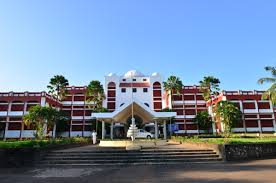

MES College of Engineering (MESCE), Kuttippuram, is the first self-financing engineering college in Kerala. MES College of Engineering It was established in 1994 under the Muslim Educational Society with minority status. The campus is located on the banks of the Bharathappuzha (also known as the “Nila”) river, providing a serene environmen